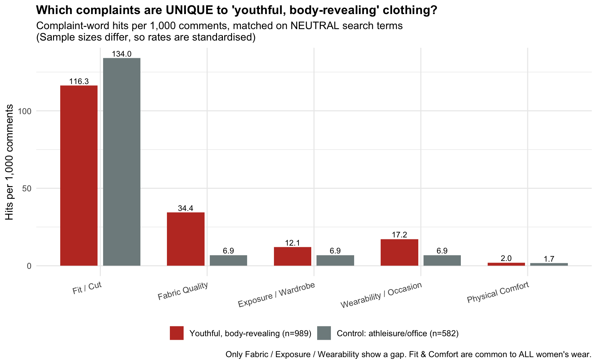

What Shapes Purchase Intent for ‘Youthful, Body-Revealing’ Fast Fashion? A Keyword and Comparison Analysis of Social-Media Feedback
A data-driven analysis of 7,900+ social-media comments
1. Why I Started & The Research Question
In summer 2026, I noticed that shopping malls in my city had begun prominently selling clothing that pairs a youthful look with a body-revealing style — think “纯欲风” (pure-desire) and “辣妹装” (spicy-girl) — and that these stores were crowded. It made me wonder: do the people buying these clothes realise what they are buying? How do they actually think about it?
So I collected and analysed social-media comments about this aesthetic, asking: what drives consumers to buy it, and how do they evaluate it once they own it?
This project is deliberately narrow: I study the consumers who already choose this style — not whether they should, or whether the style is “right.” I wanted to understand, on their own terms, what they focus on when they buy and wear these clothes.
2. Abstract (Conclusion First)
After cleaning and analysing 7,867 de-identified comments (from Xiaohongshu and Douyin), I found that:
The consumers who choose this style rarely engage with it as a political or ethical question. They talk about it the way anyone talks about clothes — fit, price, whether it flatters them, whether they can actually wear it out.
Their evaluations centre on the physical reality of wearing it: fabric quality, exposure/wardrobe-malfunction, and social wearability — which are sharply higher complaints for this category than for a matched control set (athleisure / office / yoga wear). Fit and comfort, by contrast, are universal complaints across all women’s clothing.
The near-absence of aesthetic or ethical debate is itself the finding — but it must be read carefully: these are people who already chose to engage with this style. Their silence on its politics does not mean the style is uncontroversial; it means that, for the people in this data, the purchase is not framed as a political act at all.
3. Data & Method
3.1 Data pipeline
| Stage | Tool | Output |
|---|---|---|
| Raw collection | manual + scripted (documented protocol) | ~7,900 comments |
| Cleaning | Python (csv) |
7,867 unique, de-identified |
| Database | SQLite (schema.sql) |
3 tables, indexed |
| Segmentation | Python (jieba) |
6,571 usable token rows |
| Analysis | R (dplyr, ggplot2) |
figures |
3.2 How the data was collected
Collection followed a fixed protocol — not ad-hoc grabbing. Both platforms used the same search terms, and the top ~15 high-engagement posts per term were sampled.
| Platform | Method | Search terms (examples) | Post selection |
|---|---|---|---|
| Xiaohongshu & Douyin | manual + scripted | neutral style terms (纯欲风穿搭, 辣妹装…), complaint/conflict terms (走光, 勒肉, 身材焦虑…), “awakening” terms (反容貌焦虑, 悦己穿搭…) |
top ~15 high-engagement posts per term |
| Xiaohongshu & Douyin (control) | manual + scripted | 运动风穿搭, 通勤风穿搭, 瑜伽穿搭, 职场穿搭… |
top ~15 high-engagement posts per term |
The directed track additionally targeted six store accounts by name. The control set (athleisure/office/yoga) was collected to test whether the complaint patterns are specific to this category or common to all women’s wear.
3.3 The key methodological decision: matching on search terms
This is the heart of the analysis, and it came from a real problem I hit:
- My main sample was collected using search terms with a built-in stance — some neutral (“纯欲风穿搭”), but many negative (“辣妹装翻车”, “走光”, “勒肉”). This would systematically inflate complaint rates.
- My control group (athleisure/office/yoga) was collected using only neutral style terms.
To make the comparison fair, I re-ran the analysis using only the 6 neutral style terms from the main sample (纯欲风穿搭 / 幼态感穿搭 / 甜辣风穿搭 / 斩男穿搭 / 微胖穿搭 / 辣妹装), matched against the neutral control terms. This removes the “search-term stance” bias and leaves only the category difference.
4. Core Finding
I counted complaint-words across five dimensions and compared the two groups, standardising by “hits per 1,000 comments” (since sample sizes differ: 989 vs 582).
What the chart shows:
- Fabric quality: 5× higher in the youthful, body-revealing group (34.4 vs 6.9)
- Wearability / occasion: 2.5× higher (17.2 vs 6.9)
- Exposure / wardrobe-malfunction: 1.8× higher (12.1 vs 6.9)
- Fit / cut and physical comfort: no meaningful gap — these are universal complaints
The takeaway: these consumers are not debating the “pure-desire/spicy-girl” aesthetic — they are buying a look they hope flatters them, and judging it on whether it actually does. Their complaints (cheap, exposing, impractical) are complaints about execution, not about the idea.
The words themselves tell the same story. In the neutral-search main sample (989 comments), embodied/experiential words (短 / 紧 / 显胖 / 版型 / 尴尬 / 土…) outnumber abstract-aesthetic words (审美 / 物化 / 幼态…) by roughly 16:1 (95 vs 6 occurrences). Consumers almost never frame their experience in aesthetic or ethical terms — they describe the felt reality of wearing it.
One caveat I want to state plainly: “youthful, body-revealing” is my analytic label, not theirs. The people in this data do not describe what they buy that way. They talk about clothes; I am the one applying an analytic frame. Keeping that distinction honest is the most important discipline of this project.
5. What I Explored and Why It Didn’t Survive
The most valuable part of this project was not the conclusion — it was the process of ruling things out. Three hypotheses were tested and honestly abandoned:
| Hypothesis | Why it failed |
|---|---|
| “Consumers are covertly resisting the youthful styling (saying ‘cheap’ when they mean ‘problematic’)” | Direct mentions of the aesthetic (幼态/扮嫩/像小孩) appeared in only 21 of 7,867 comments — no textual evidence |
| “The core pain point is poor fit” | Control-group comparison showed fit complaints are equally high in athleisure — it’s universal, not specific |
| “The unique pain is physical discomfort (3.9× higher)” | Turned out to be an artefact of my negative search terms — disappeared once I matched on neutral terms |
This “elimination” process is what gives the final conclusion its credibility: it survives not because it was my first idea, but because it was the one that remained after honest testing.
6. Limitations & Ethics
Methodological
- Selection on the outcome. The sample only contains people who already engaged with this style — buying or commenting presupposes some acceptance of it. People strongly averse to the youthful, body-revealing look (who would refuse to wear it) are systematically absent. So “consumers don’t debate the aesthetic” is better read as: among those who engage with it, the purchase is not framed as a political act.
- Sampling is non-probabilistic (top ~15 high-engagement posts per term). Conclusions describe the conflict discourse, not population-wide attitudes.
- High-engagement ≠ organic. On Xiaohongshu — a recommendation / soft-advertising platform — top posts are often promotions or sponsored content, which may skew the sample toward positive praise.
- The topic itself is sensitive. “Sexiness” is private and socially loaded, so users may not disclose their real feelings about it; the text may under-represent genuine discomfort. (No sensitive personal data was collected.)
- Search terms carry a built-in stance. Negative terms (“走光”, “勒肉”) inflate complaint rates; I corrected this by matching on neutral terms, but some residual bias may remain.
- The control group is smaller (n=582) and the Douyin portion was partially contaminated and excluded; treat it as directional evidence.
- Keyword matching over-counts ambiguous words (“大”/“小” can be neutral), so complaint rates are approximate.
- Word-frequency analysis has no semantic context — it cannot detect sarcasm, negation, or implicit stance.
Ethics & privacy
- All authors de-identified (U001…), store names pseudonymised (Store-A…F), raw IDs and full comment text excluded from the public repo.
7. Conclusion & Business Implication
If these consumers are not debating the aesthetic — they are buying “a look that flatters them” — then the opportunity is clear:
The next brand does not need to argue about the aesthetic. It needs to deliver the promise the aesthetic makes. Make “纯欲/辣妹” clothes that are quality fabric, non-exposing, and wearable in normal life, and you serve the demand that is currently being frustrated by cheap, impractical products.
The insight reframes the category from “a morally controversial trend” into “a promise being badly executed” — which is exactly the kind of framing a business can act on.
8. Why Do They Buy It? Three Open Hypotheses
This data shows what these consumers talk about, not why they buy. The following are hypotheses — directions to test next, not conclusions. Each is paired with the faint signal I can already see in the data.
- A shortcut to being seen as attractive. They may buy to meet a mainstream standard of beauty — “flattering,” “a good figure” (好看/身材 dominate the comments). Business angle: the product is sold as a fast path to approval, not as self-expression.
- Youth as desirability. The youthful appeal may trade on the equation younger-looking = more desirable. Business angle: a youthful look is packaged as a premium, and consumers buy the promise of looking “sweet-but-alluring.”
- Cheap experimentation. Fast fashion’s low price makes trying a youthful, body-revealing look a near-zero-risk trial. Business angle: the “cheap” that drives complaints is also what drives trial — a paradox a brand could exploit or resolve.
9. Future Work
- Demographic segmentation. The current sample has no age, region, or education labels. Re-collecting with these dimensions would let me test whether the evaluation patterns differ across consumer groups (e.g. by age cohort or city tier).
- Richer signal. Adding engagement weighting (like-counts) or sentiment scores would distinguish how much resonance a comment has, not just whether it appears.
- Qualitative depth. Reading a stratified sample of full comment threads could test whether the near-absence of aesthetic debate reflects genuine indifference, or discomfort that is hard to articulate.